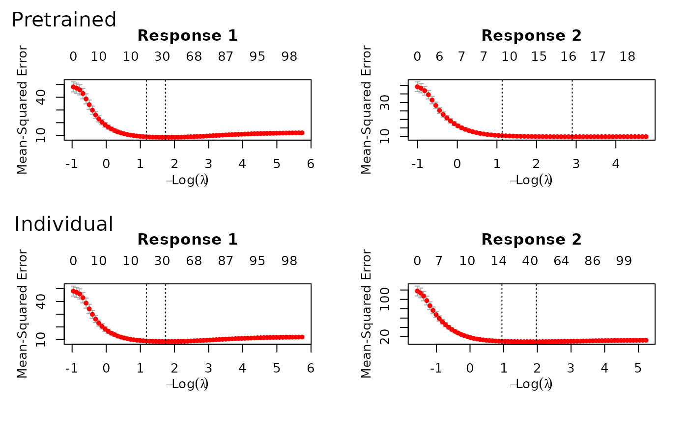

Time series data
TimeSeriesData.Rmd
require(ptLasso)
#> Loading required package: ptLasso
#> Loading required package: ggplot2
#> Loading required package: glmnet
#> Loading required package: Matrix
#> Loaded glmnet 4.1-8
#> Loading required package: gridExtraWe may have repeated measurements of \(X\) and \(y\) across time; for example, we may observe patients at two different points in time. We expect that the relationship between \(X\) and \(y\) will be different at time 1 and time 2, but not completely unrelated. Therefore, pretraining can be useful: we can use the model fitted at time 1 to inform the model for time 2.
ptLasso supports this setting, and below is an example.
We first assume that \(X\) is constant
across time, and \(y\) changes. Later,
we will show an example where \(X\)
changes across time.
To do pretraining with time series data, we:
- fit a model for time 1 and extract its offset and support,
- use the offset and support (the usual pretraining) to train a model for time 2.
We could continue this for \(k\) time points: after fitting a model for time 2, we would extract the offset and support. Now, the offset will include the offset from time 1 and the prediction from time 2; the support will be the union of supports from the first two models.
Example 1: covariates are constant over time
We’ll start by simulating data – more details in the comments.
set.seed(1234)
# Define constants
n = 600 # Total number of samples
ntrain = 300 # Number of training samples
p = 100 # Number of features
sigma = 3 # Standard deviation of noise
# Generate covariate matrix
x = matrix(rnorm(n * p), n, p)
# Define coefficients for time points 1 and 2
beta1 = c(rep(2, 10), rep(0, p - 10)) # Coefs at time 1
beta2 = runif(p, 0.5, 2) * beta1 # Coefs at time 2, shared support with time 1
# Generate response variables for times 1 and 2
y = cbind(
x %*% beta1 + sigma * rnorm(n),
x %*% beta2 + sigma * rnorm(n)
)
# Split data into training and testing sets
xtest = x[-(1:ntrain), ] # Test covariates
ytest = y[-(1:ntrain), ] # Test response
x = x[1:ntrain, ] # Train covariates
y = y[1:ntrain, ] # Train responseHaving simulated data, we are ready to call ptLasso; the
call to ptLasso looks much the same as in all our other
examples, only now (1) \(y\) is a
matrix with one column for each time point and (2) we specify
use.case = "timeSeries". After fitting, a call to
plot shows the models fitted for both of the time points
with and without using pretraining.

And as before, we can predict with xtest.
In this example, pretraining helps performance: the two time points
share the same support, and pretraining discovers and leverages
this.
preds = predict(fit, xtest, ytest = ytest)
preds
#>
#> Call:
#> predict.ptLasso(object = fit, xtest = xtest, ytest = ytest)
#>
#>
#>
#> alpha = 0
#>
#> Performance (Mean squared error):
#>
#> mean response_1 response_2
#> Pretrain 9.604 10.78 8.428
#> Individual 10.428 10.78 10.076
#>
#> Support size:
#>
#> Pretrain 26 (10 common + 16 individual)
#> Individual 39We specified alpha = 0 in this example, but cross
validation would advise us to choose \(\alpha
= 0.2\). Plotting shows us the average performance across the two
time points. Importantly, at time 1, the individual model and the
pretrained model are the same; we do not see the advantage of
pretraining until time 2 (when we use information from time 1).
cvfit = cv.ptLasso(x, y, use.case = "timeSeries")
plot(cvfit)
predict(cvfit, xtest, ytest = ytest)
#>
#> Call:
#> predict.cv.ptLasso(object = cvfit, xtest = xtest, ytest = ytest)
#>
#>
#>
#> alpha = 0.2
#>
#> Performance (Mean squared error):
#>
#> mean response_1 response_2
#> Pretrain 10.62 10.87 10.37
#> Individual 10.45 10.87 10.03
#>
#> Support size:
#>
#> Pretrain 28 (10 common + 18 individual)
#> Individual 40Note that we could also have treated this as a multireponse problem, and ignored the time-ordering of the responses. See more in the section called “Multi-response data with Gaussian responses”. (However, time ordering can be informative, and the multi-response approach does not make use of this.)
fit = ptLasso(x, y, use.case = "multiresponse")Example 2: covariates change over time
Now, we’ll repeat what we did above, but we’ll simulate data where
\(x\) changes with time. In this
setting, ptLasso expects \(x\) to be a list with one covariate matrix
for each time.
set.seed(1234) # Set seed for reproducibility
# Define constants
n = 600 # Total number of samples
ntrain = 300 # Number of training samples
p = 100 # Number of features
sigma = 3 # Standard deviation of noise
# Covariates for times 1 and 2
x1 = matrix(rnorm(n * p), n, p)
x2 = x1 + matrix(0.2 * rnorm(n * p), n, p) # Perturbed covariates for time 2
x = list(x1, x2)
# Define coefficients for time points 1 and 2
beta1 = c(rep(2, 10), rep(0, p - 10)) # Coefs at time 1
beta2 = runif(p, 0.5, 2) * beta1 # Coefs at time 2, shared support with time 1
# Response variables for times 1 and 2:
y = cbind(
x[[1]] %*% beta1 + sigma * rnorm(n),
x[[2]] %*% beta2 + sigma * rnorm(n)
)
# Split data into training and testing sets
xtest = lapply(x, function(xx) xx[-(1:ntrain), ]) # Test covariates
ytest = y[-(1:ntrain), ] # Test response
x = lapply(x, function(xx) xx[1:ntrain, ]) # Train covariates
y = y[1:ntrain, ] # Train responseNow, \(x\) is a list of length two:
str(x)
#> List of 2
#> $ : num [1:300, 1:100] -1.207 0.277 1.084 -2.346 0.429 ...
#> $ : num [1:300, 1:100] -1.493 0.303 1.172 -2.316 0.224 ...We can call ptLasso, cv.ptLasso,
plot and predict just as before:

predict(fit, xtest, ytest = ytest) # Predict using the fitted model
#>
#> Call:
#> predict.ptLasso(object = fit, xtest = xtest, ytest = ytest)
#>
#>
#>
#> alpha = 0
#>
#> Performance (Mean squared error):
#>
#> mean response_1 response_2
#> Pretrain 11.92 12.1 11.75
#> Individual 11.46 12.1 10.82
#>
#> Support size:
#>
#> Pretrain 36 (16 common + 20 individual)
#> Individual 61
# With cross validation:
cvfit = cv.ptLasso(x, y, use.case = "timeSeries")
plot(cvfit, plot.alphahat = TRUE) # Plot cross-validated model
predict(cvfit, xtest, ytest = ytest) # Predict using cross-validated model
#>
#> Call:
#> predict.cv.ptLasso(object = cvfit, xtest = xtest, ytest = ytest)
#>
#>
#>
#> alpha = 0.4
#>
#> Performance (Mean squared error):
#>
#> mean response_1 response_2
#> Pretrain 15.73 12.11 19.35
#> Individual 11.53 12.11 10.96
#>
#> Support size:
#>
#> Pretrain 54 (19 common + 35 individual)
#> Individual 65